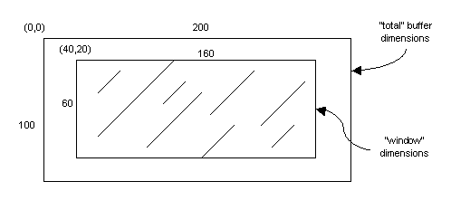

The two parameters to the LTIImageStage::read() function are an LTIScene object and an LTISceneBuffer object. These together specify the region of the image to be decoded and the buffer to put the data into.
The properties of an LTIScene are the upper-left point, dimensions, and magnification of the region to be decoded. (For more information see "Scenes".)
As a scene is a largely read-only embodiment of its properties, the LTINavigator class extends LTIScene by adding functions to control the scene, including:
By using the navigator class, issues of proper rounding control and keeping the scene within the image can be managed transparently to the user.
The LTISceneBuffer class is used to represent the in-memory buffer that will hold the data produced by the read() call. The buffer can be supplied directly by the user, allocated internally by the class, or inherited from another scene buffer. While the extents of the “visible” or “exposed” window of the buffer must be at least as large as the dimensions of the scene being used for the read operation, the actual buffer might be considerably larger; this allows for read requests to target specific regions of the buffer, as is required for strip-based decoding workflows.
As an example, consider Figure 1, which shows an LTISceneBuffer object that has a total size of 200x100 (20,000 pixels) and a window size of 160x60 (9,600 pixels). This buffer can be used to “insert” a scene onto the total buffer, using (40,20) as the upper-left position. (This upper-left position corresponds to byte 200*20+40 of the buffer, assuming an 8-bit, 1-banded image.)

Figure 1: LTISceneBuffer
The data in the scene buffer is internally stored in a packed BSQ format. By supporting only one data layout, the complexity of the various image stages and the need for additional memory-to-memory copies is reduced. However, when constructing decoder pipelines the client often needs the data organized in some other fashion, so the scene buffer class supports these “import/export” features:
The copying is performed relative to the visible window of the buffer, not the total buffer. For the BSQ memory functions, the data may be held as one large BSQ buffer or as one individual buffer for each band.